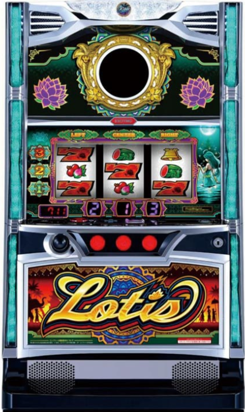

目次

スマスロ ローティスSMART SLOT LOTIS ｜ 北電子
設定6 機械割
108.1%
設定1 機械割
98.0%
天井
最大900G
AT純増
約5.0枚/G
スマスロ ローティス ボーナス確率・機械割
6段階設定（設定L・1・2・4・5・6）。業界初SBBストックシステム搭載の北電子スマスロAT機。
| 設定 | 初当り合算 | BB確率 | 機械割 |
|---|---|---|---|
| 設定1 | 1/287.2 | 1/514.1 | 98.0% |
| 設定2 | 1/281.2 | 1/501.3 | 99.6% |
| 設定4 | 1/271.8 | 1/481.7 | 102.7% |
| 設定5 | 1/264.8 | 1/467.3 | 105.0% |
| 設定6 | 1/260.3 | 1/457.4 | 108.1% |
※ SBB確率は全設定共通 1/16384。設定Lの機械割は非公開。
ボーナス獲得枚数
| ボーナス | 獲得枚数 |
|---|---|
| SBB（スーパービッグ） | 約507枚 |
| BB（ビッグ） | 約206枚 |
| RB（レギュラー） | 約66枚 |
期待収支（8000G消化時）
| 設定 | 差枚数 | 期待収支（等価） | 期待収支（5.6枚交換） |
|---|---|---|---|
| 設定1 | −480枚 | −1,920pt | −2,688pt |
| 設定2 | −96枚 | −384pt | −538pt |
| 設定4 | +648枚 | +2,592pt | +1,851pt |
| 設定5 | +1,200枚 | +4,800pt | +3,429pt |
| 設定6 | +1,944枚 | +7,776pt | +5,554pt |
※ 差枚数 = (機械割 − 100%) × 8000G × 3枚。等価: 1pt = 4.0枚 / 5.6枚交換: 1pt = 5.6枚
スマスロ ローティス 設定判別ポイント
1
初当り合算確率
設定1（1/287.2）→ 設定6（1/260.3）。約1.10倍の差があり、長時間稼働で判別精度が上がります。
2
スイカ同時当選
スイカ同時当選時は即ボーナス＋モード優遇。出現頻度に設定差がある可能性があります。
3
中段チェリー
中段チェリー成立時はSBB確定＋極楽モード以上移行。出現自体がプレミアム級です。
注意：詳細な設定判別数値は導入後に更新予定です。
スマスロ ローティス 天井・リセット
| モード | 天井G数 |
|---|---|
| 朝一 | 200G |
| チャンス | 400G |
| 通常A / 通常B | 900G |
| 天国 | 32G |
| 極楽 | 32G |
| 超極楽 | 32G |
| 引き戻しA | 200G |
| 引き戻しB | 100G |
※ 天国以上のループ率は約75〜92%。
やめ時の目安：ボーナス後32G以内の天国を否定してからやめ。天国ループ中は打ち続けましょう。
スマスロ ローティス 設定変更・朝一恩恵
| 項目 | 設定変更時 | 電源OFF→ON |
|---|---|---|
| モード | 朝一モード（200G天井）スタート | 前日の状態を引き継ぎ |
朝一のポイント：設定変更後は朝一モード（200G天井）からスタートするため、リセット台は200G以内にボーナスが確定します。
設定判別ツール
総回転数とボーナス回数を入力すると、ポアソン尤度に基づき各設定の確率を算出します。
スマスロ ローティス よくある質問
スマスロ ローティスの設定6機械割は？
設定6の機械割は108.1%です。6段階設定（L・1・2・4・5・6）で、設定4（102.7%）から機械割100%を超えます。AT純増は約5.0枚/Gです。
スマスロ ローティスの天井は何ゲームですか？
通常モード時の天井は最大900Gでボーナス当選です。朝一モードは200G、チャンスモードは400G、天国モードは32Gが天井となります。モードによって大きく異なるため、モード判別が重要です。
スマスロ ローティスの設定判別で重要な指標は？
初当たり確率（設定1: 1/287.2 → 設定6: 1/260.3）が基本指標です。スイカ同時当選時は即ボーナス＋モード優遇、中段チェリーはSBB＋極楽モード以上移行が確定します。設定判別の詳細数値は導入後に更新予定です。
スマスロ ローティスのやめ時はいつですか？
ボーナス後のモードを確認し、天国以上（32G天井）を否定してからやめるのが基本です。天国以上のループ率は約75〜92%あるため、32G以内の連チャンが途切れるまでは打ち続けましょう。
スマスロ ローティスのSBBとは？
SBB（スーパービッグボーナス）は約507枚獲得できる最上位ボーナスです。出現確率は全設定共通で1/16384。業界初のSBBストックシステムを搭載しており、通常のBB（約206枚）やRB（約66枚）とは別格の出玉性能です。
スマスロ ローティスは北電子のどんな機種ですか？
北電子のスマスロAT機で、ジャグラーシリーズとは異なるAT機路線の機種です。SBBストックシステムやモード管理型の天井システムを搭載し、AT純増約5.0枚/Gの高純増機となっています。